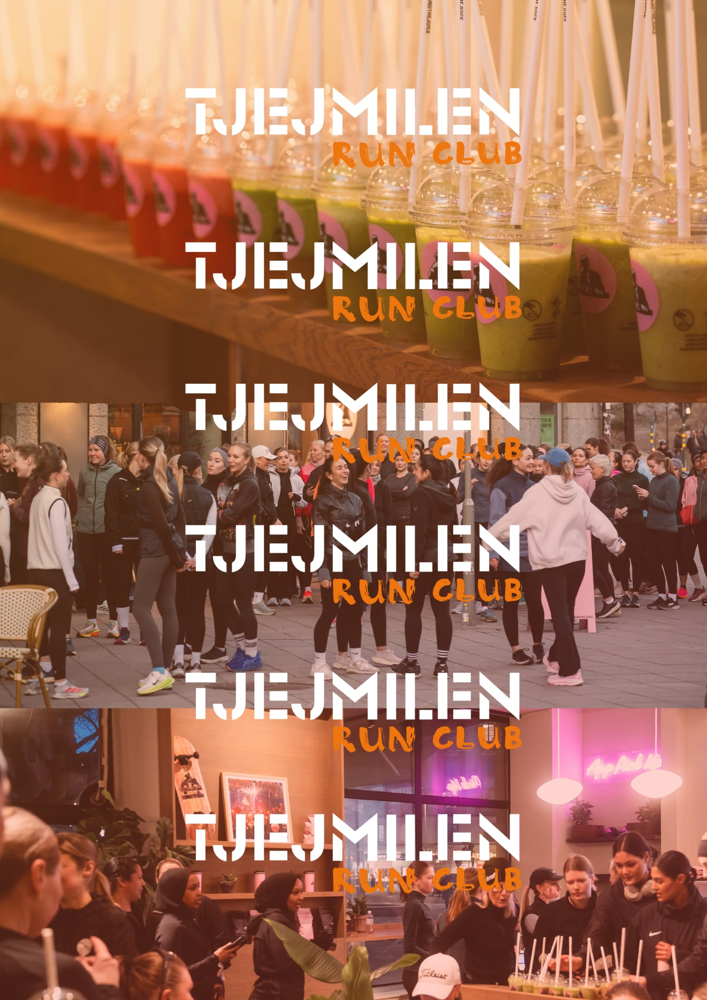

Run clubs i Stockholm
Hitta din run club bland Stockholms mest aktiva löpargrupper — filtrera på nivå, dag och stadsdel.
Senast uppdaterad:



Inbjudningar,
events och
promo runs.
Varje söndag får du en sammanställning av vad som händer kommande vecka — veckans pass, nyheter, intervjuer och events. Gratis så klart!
Gratis. Avsluta när du vill.
Frågor och svar
De flesta run clubs i Stockholm är helt gratis att delta i. Vissa clubs erbjuder betalda träningsprogram eller premium-pass, men grundkonceptet är öppet för alla.
De flesta löpargrupper i Stockholm välkomnar alla nivåer — från nybörjare till erfarna löpare. Många clubs har anpassade pass för olika tempo och distanser.
Stockholms run clubs samlas på olika platser och tider beroende på club. Vanliga mötesplatser är Hagaparken, Djurgården, Östermalm och Södermalm. Kolla respektive clubs sida för aktuella tider.
På Runclubs.se kan du filtrera Stockholms run clubs efter dag, nivå och stadsdel. Välj de kriterier som passar dig och hitta ditt crew direkt.
Ja! De flesta run clubs välkomnar nybörjare och uppmuntrar till att ta med vänner. Social löpning är kärnan i run club-kulturen.